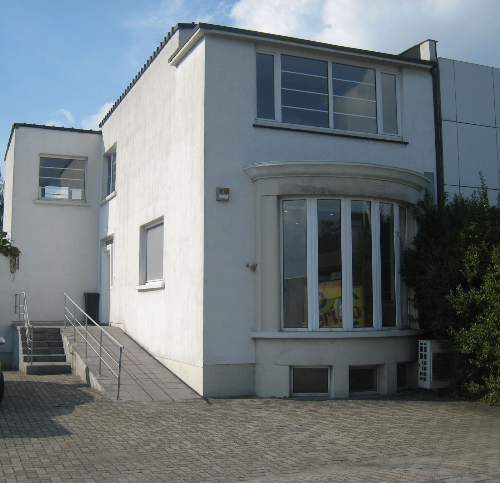

Pc- en laptopherstelling
Start uw toestel niet meer op, loopt het vast of doet een onderdeel het niet? We zoeken uit wat er scheelt en zeggen u eerlijk of herstellen de moeite loont.
Koningin Astridlaan 75, Kontich
Traag, stuk of aan een upgrade toe? Breng uw pc of laptop bij PeriCo. Een deskundige zaakvoerder, eerlijk advies en schappelijke prijzen.
Start uw toestel niet meer op, loopt het vast of doet een onderdeel het niet? We zoeken uit wat er scheelt en zeggen u eerlijk of herstellen de moeite loont.
Een snellere schijf, extra geheugen of een nieuw onderdeel geeft een trage computer vaak een tweede leven, voor een fractie van een nieuwe.
Een nieuwe pc of laptop, of net dat ene onderdeel dat u nodig hebt. Met advies over wat bij uw gebruik past, zonder overbodige extra's.
Zeg wat er scheelt en kies wanneer u binnenkomt. Zo ligt alles klaar en staat u niet voor niets aan de toonbank.
"Wordt hier steeds goed geholpen voor schappelijke prijzen."
"Vriendelijke en deskundige service. Topadres!"
Donderdag enkel na afspraak. Twijfelt u? Bel even naar 03 283 83 10 of de gsm, 0473 83 76 10.

Koningin Astridlaan 75
2550 Kontich
Het witte pand met het gebogen raam en het gele bord, met een hellend pad naar de ingang.
Voor klanten uit Kontich, Waarloos, Aartselaar, Edegem, Lint en Duffel.